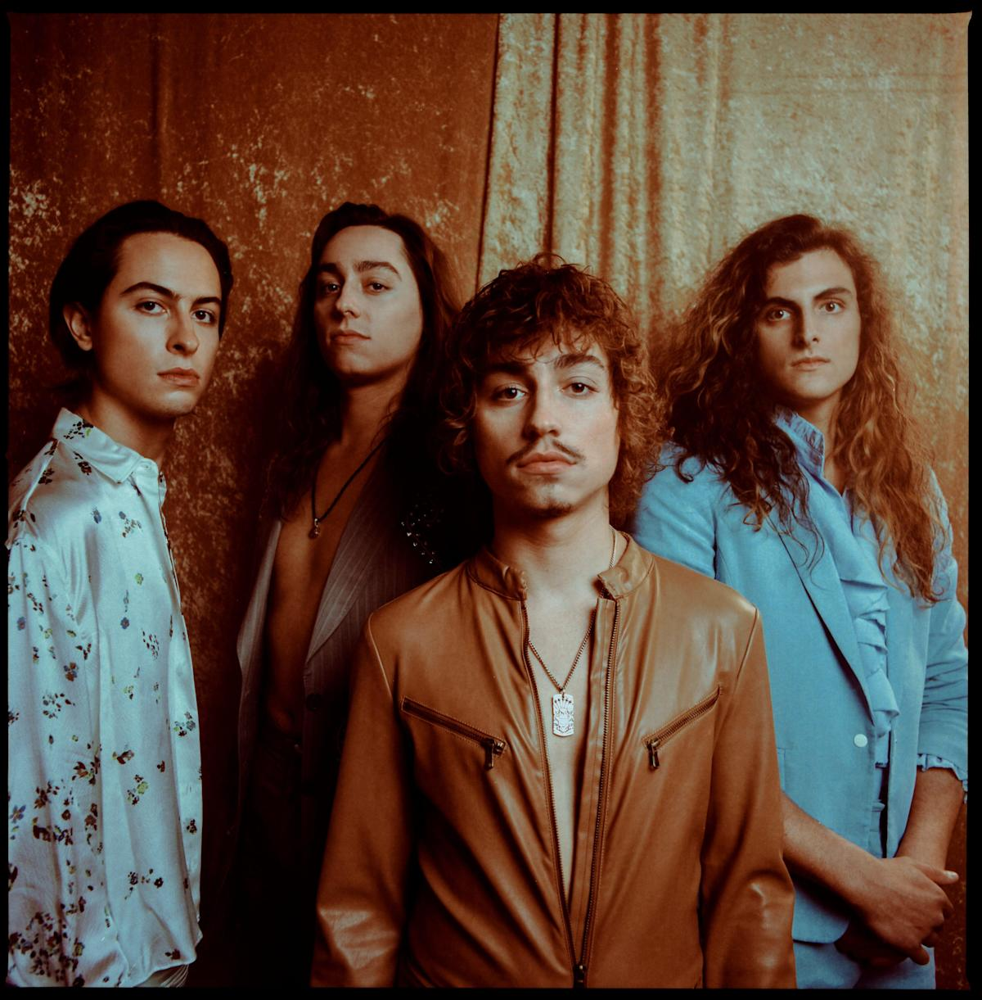
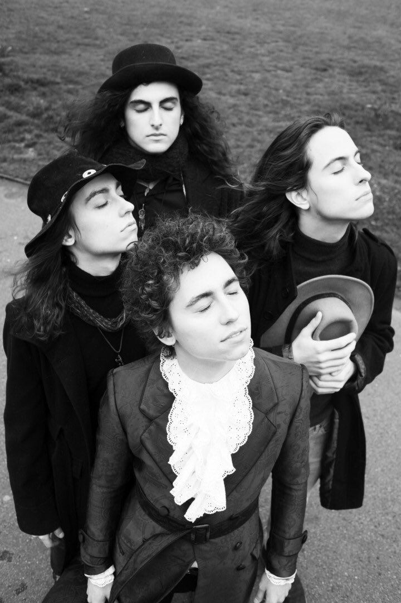
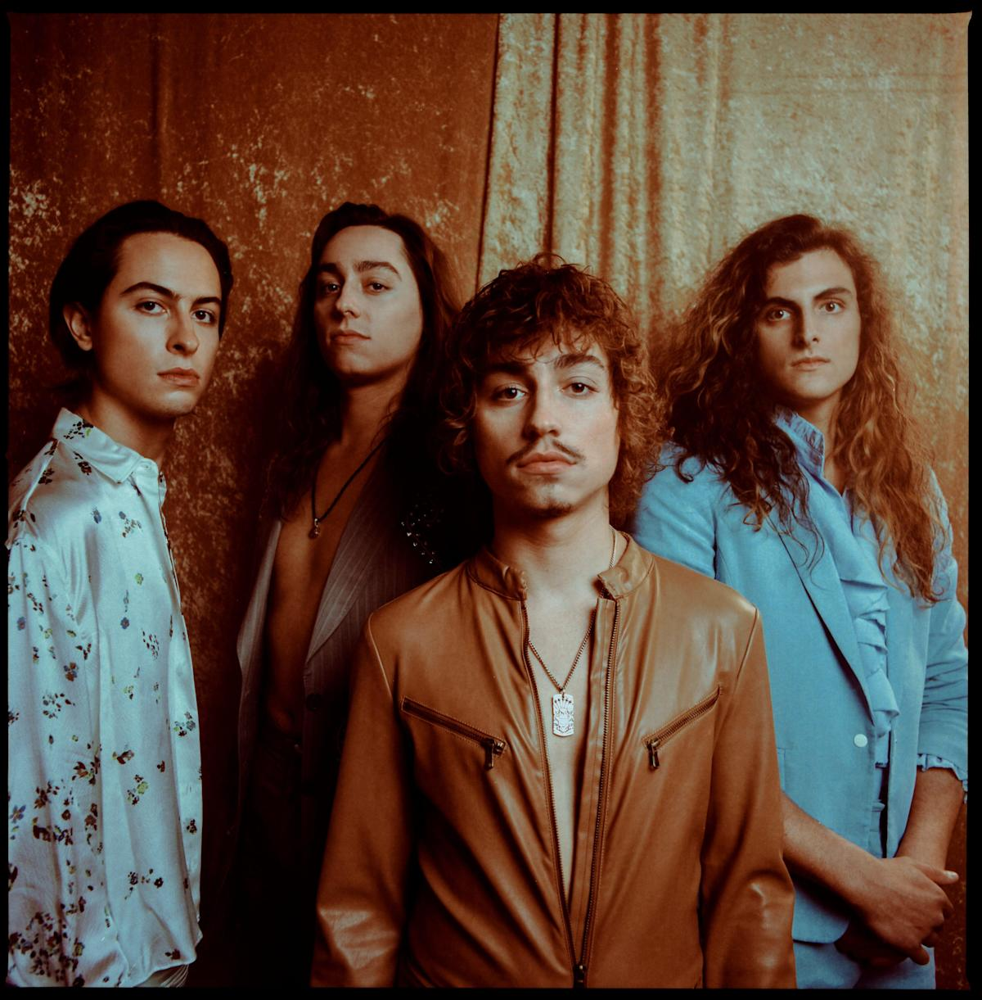
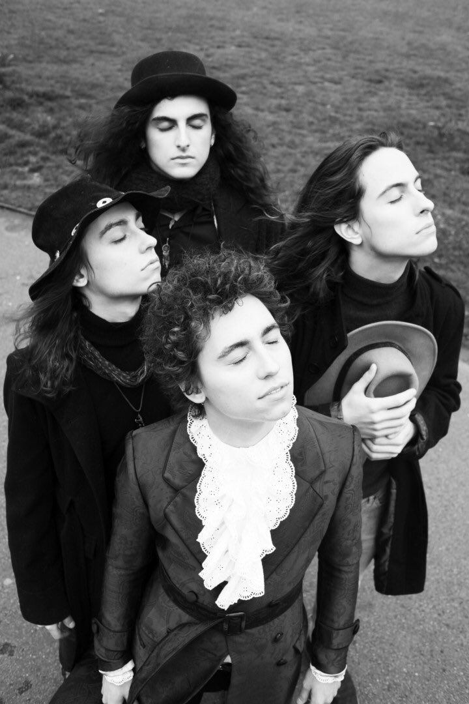
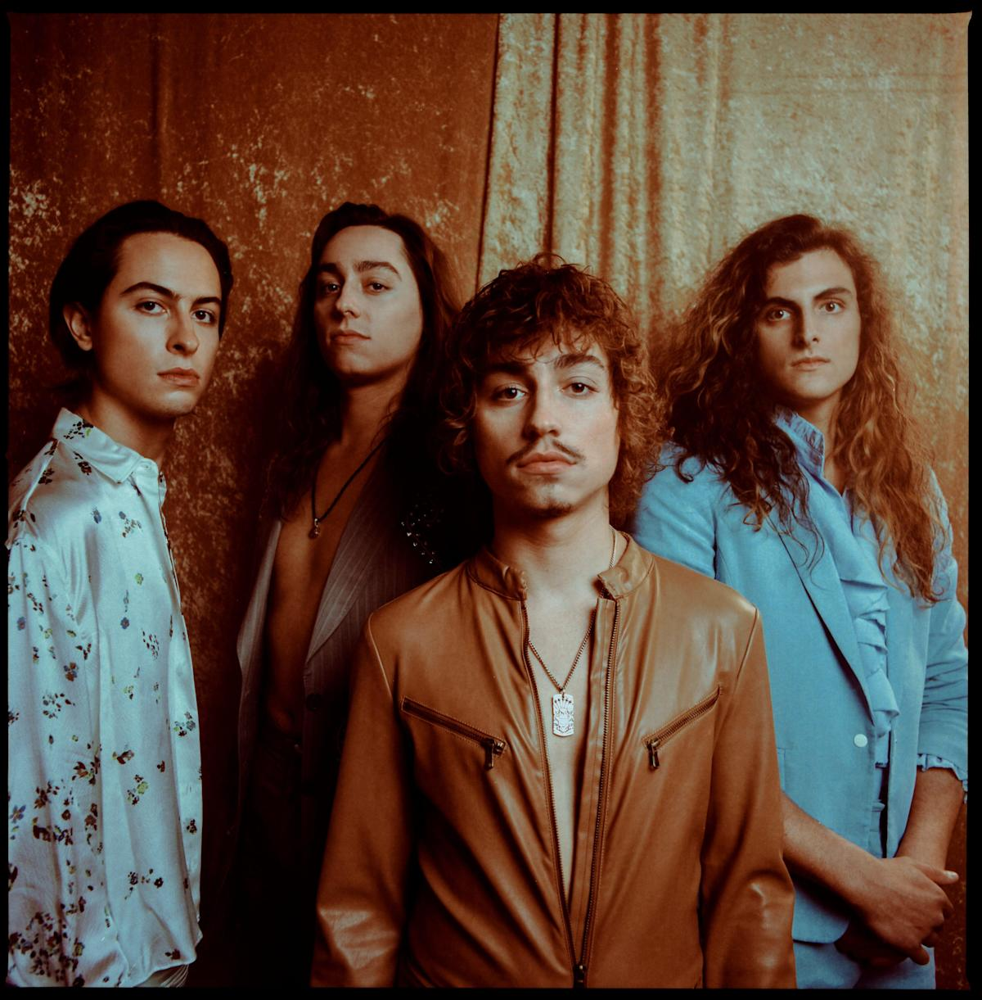
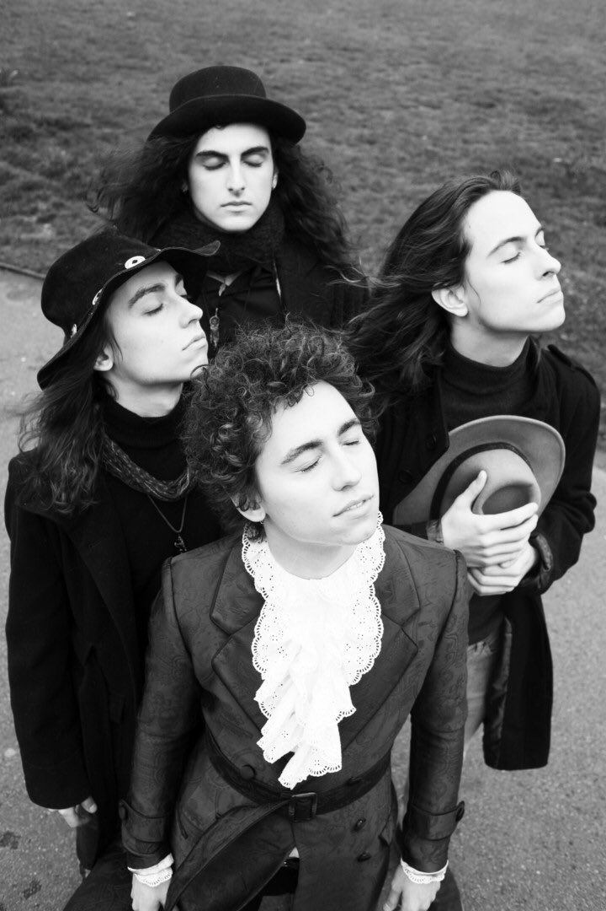

The astral feeling that you get when listeing to Greta Van Fleet is one of the best feelings in the world, the music creates a surreal sound.


Greta Van Fleet’s shared message with their music is to spread “peace, love and unity,” and their collective goal is to have people walk out of their
live shows feeling invigorated, energized and exhilarated, and to take that feeling out into the world.
Greta Van Fleet’s shared message with their music is to spread “peace, love and unity,” and their collective goal is to have people walk out of their
live shows feeling invigorated, energized and exhilarated, and to take that feeling out into the world.
Greta Van Fleet is 4 young musicians - twin brothers Josh (vocals) and Jake Kiszka (guitar), both 22, younger brother Sam (bass/keys, 19),
and longtime friend Danny Wagner (drums, 20). All from the tiny Michigan hamlet of Frankenmuth known for its chicken dinners and the world’s largest Christmas store. All were raised
on their parents’ vinyl collections which
helped give birth to the music they make today: a high-energy hybrid of rock’n’roll, blues and soul.

 


